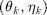
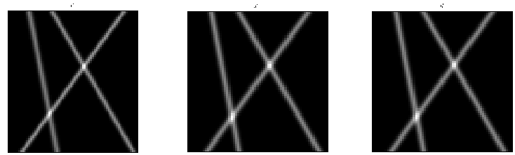
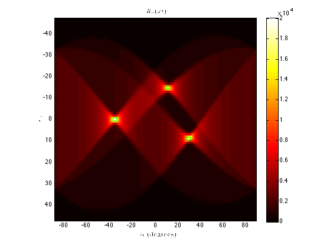
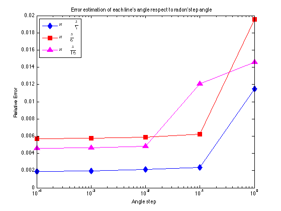
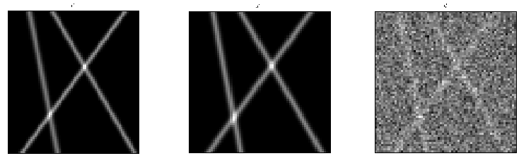
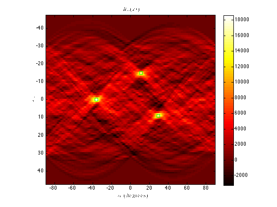
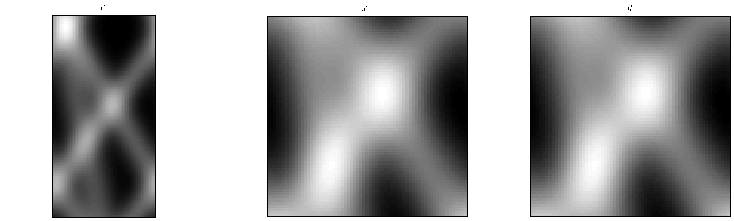
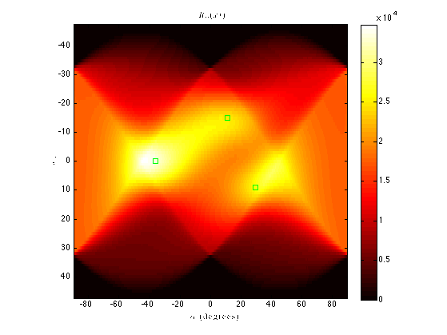

Radon transform applied to lines detection
- Compute the Radon transform of the image of blurred lines xstar
- Compute the Radon transform of the image of noisy blurred lines y
- Compute the Radon transform of the image of large blurred lines xstar
- Peaks correspond to an estimation of parameters of the lines with parameters 
- Display relative errors (for both)
- Display and save this image + peaks (for both)
Contents
DATA GENERATION
W=65; % image width (must be odd W=2M+1) H=65; % image height K=3; % number of lines spread=1; % std of the gaussian blur noiselevel=0; % level of noise randomgen=0; % boolean if lines are generated randomly of manually rng(0); % seed of random numbers generator plotData=1; % display images v, x and y plotComp=0; % display others comparaisons theo vs. emp t_k=[pi/6 -pi/5 pi/16]; % array containing angles of lines a_k=[255 255 255]; % array containing amplitude of lines p_k=[10 0 -15]; % array containing offset of lines data_generation; % Generate the blurred image xstar % of these K lines with additional % noise y=xstar+randn(H,W)*noiselevel
RADON TRANSFORM OF XSTAR (NORMAL BLUR)
Radon transform on the noisy data y
alpha = -90+0.414:0.1:90; % +0.414 to avoid the samples to correspond [R,xp] = radon(y,alpha); % to exact degrees of the lines t_k
Decomment to find the peaks (automaticaly) via function FastPeakFind
% Find peaks of the Radon transform (automaticaly) % p=FastPeakFind(R); % we remove this false peak % p=[p(1:2);p(5:end)]; % palpha=p(1:2:end); % pxp=p(2:2:end);
Find peaks of the Radon transform (manually)
pxp=[48 57 33]; % Vertical coordinates of the peaks [M1 I1]=max(R(48,:)); [M1 I2]=max(R(57,:)); [M1 I3]=max(R(33,:)); palpha=[I1 I2 I3]; % Horizontal coordinates of the peaks
Peaks of the Radon transform - Estimation of lines parameters
alphapeaks=alpha(palpha)*pi/180; xppeaks=xp(pxp)'; [t_k_emp,jj]=sort(alphapeaks); [t_k,ii]=sort(t_k); p_k_emp=xppeaks./cos(alphapeaks);
Display the estimated parameters and the relative errors
disp(['t_k = ',num2str(t_k)]); disp(['t_k_emp = ',num2str(t_k_emp)]); disp(['p_k = ',num2str(p_k)]); disp(['p_k_emp = ',num2str(p_k_emp)]); disp(['(t_k-t_k_emp)/t_k = ',num2str((t_k-t_k_emp)./t_k)]); disp(['p_k-p_k_emp = ',num2str(p_k(ii)-p_k_emp(jj))]);
t_k = -0.62832 0.19635 0.5236 t_k_emp = -0.62982 0.19398 0.52035 p_k = 10 0 -15 p_k_emp = 0 10.3729 -15.2867 (t_k-t_k_emp)/t_k = -0.0023889 0.012089 0.0062 p_k-p_k_emp = 0 0.28669 -0.37292
Plot the Radon transform + peaks
figure, imagesc(alpha, xp, R); colormap(hot); xlabel('$$\alpha$$ (degrees)','Interpreter','latex'); ylabel('$$x\prime$$','Interpreter','latex'); title('$$R_{\alpha} (x\prime)$$','Interpreter','latex'); colorbar set(gcf,'color','w'); axis square; hold on; plot(alpha(palpha),xp(pxp),'gs')
Study the variation of relative error with respect to alpha discretization of the Radon transform
Tabstep=[1 0.1 0.01 0.001 0.0001]; NbSteps=length(Tabstep); TabErr1=zeros(1,NbSteps); TabErr2=zeros(1,NbSteps); TabErr3=zeros(1,NbSteps); for i=1:NbSteps alpha = -90+0.414:Tabstep(i):90; [R,xp] = radon(y,alpha); [M I1] = max(R(48,:)); [M I2] = max(R(57,:)); [M I3] = max(R(33,:)); thetatilde1=alpha(I1)*pi/180; thetatilde2=alpha(I2)*pi/180; thetatilde3=alpha(I3)*pi/180; TabErr1(i)=abs((t_k(1)-thetatilde1)/t_k(1)); TabErr2(i)=abs((t_k(3)-thetatilde2)/t_k(3)); TabErr3(i)=abs((t_k(2)-thetatilde3)/t_k(2)); end figure; semilogx(Tabstep,TabErr1,'d-b','MarkerFaceColor','b','MarkerSize',10); hold on; semilogx(Tabstep,TabErr2,'s-r','MarkerFaceColor','r','MarkerSize',10); semilogx(Tabstep,TabErr3,'^-m','MarkerFaceColor','m','MarkerSize',10); xlabel('Angle step'); ylabel('Relative Error'); title('Error estimation of each line''s angle respect to radon''step angle'); set(gcf,'color','w'); legend({'$$\theta=-\frac{\pi}{5}$$','$$\theta=\frac{\pi}{6}$$',... '$$\theta=\frac{\pi}{16}$$'},'Interpreter','latex','Location','NorthWest');
RADON TRANSFORM OF Y (STRONG NOISE)
noiselevel=200; % level of noise t_k=[pi/6 -pi/5 pi/16]; % array containing angles of lines a_k=[255 255 255]; % array containing amplitude of lines p_k=[10 0 -15]; % array containing offset of lines data_generation; % Generate the blurred image xstar % of these K lines with additional % noise y=xstar+randn(H,W)*noiselevel
Radon transform on the noisy data y
alpha = -90+0.414:0.1:90; % +0.414 to avoid the samples to correspond [R,xp] = radon(y,alpha); % to exact degrees of the lines t_k
Plot the Radon transform + peaks
figure, imagesc(alpha, xp, R); colormap(hot); xlabel('$$\alpha$$ (degrees)','Interpreter','latex'); ylabel('$$x\prime$$','Interpreter','latex'); title('$$R_{\alpha} (x\prime)$$','Interpreter','latex'); colorbar set(gcf,'color','w'); axis square; hold on; plot(alpha(palpha),xp(pxp),'gs')
RADON TRANSFORM OF XSTAR (STRONG BLUR)
spread=8; % std of the gaussian blur noiselevel=0; % level of noise t_k=[pi/6 -pi/5 pi/16]; % array containing angles of lines a_k=[255 255 255]; % array containing amplitude of lines p_k=[10 0 -15]; % array containing offset of lines data_generation; % Generate the blurred image xstar % of these K lines with additional % noise y=xstar+randn(H,W)*noiselevel
Radon transform on the noisy data y
alpha = -90+0.414:0.1:90; % +0.414 to avoid the samples to correspond [R,xp] = radon(y,alpha); % to exact degrees of the lines t_k
Plot the Radon transform + peaks
figure, imagesc(alpha, xp, R); colormap(hot); xlabel('$$\alpha$$ (degrees)','Interpreter','latex'); ylabel('$$x\prime$$','Interpreter','latex'); title('$$R_{\alpha} (x\prime)$$','Interpreter','latex'); colorbar set(gcf,'color','w'); axis square; hold on; plot(alpha(palpha),xp(pxp),'gs')